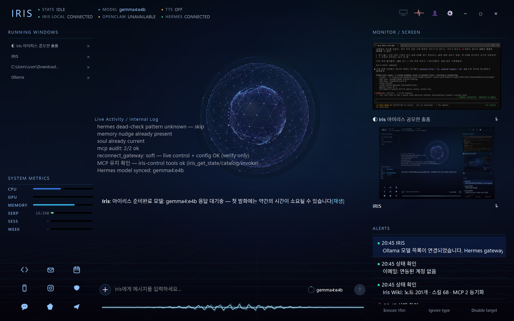
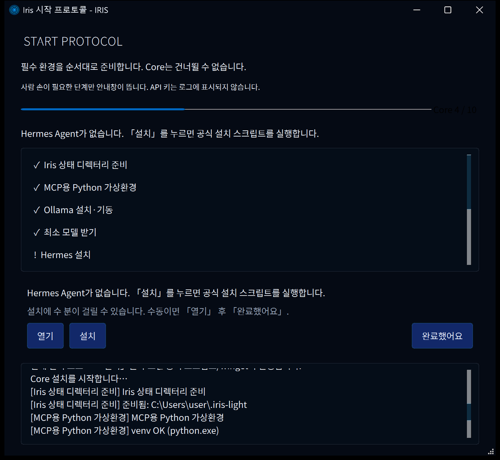
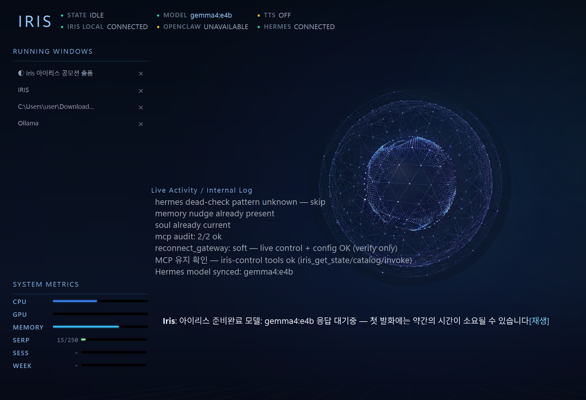

IRIS
구독료도, 복잡한 설치도 없이
내 PC에서 바로 쓰는 AI 에이전트
01해결하려는 문제
AI를 가장 필요로 하는 사람이
가장 못 쓰고 있습니다.
학생·취준생·초보 개발자에게 최신 AI 에이전트는 두 겹의 벽입니다. 매달 나가는 구독비, 그리고 모델·게이트웨이·도구를 직접 엮어야 하는 설치 복잡도.
구독이 전제가 된 도구들
쓸 만한 에이전트는 대부분 월 구독형입니다. 학습·사이드 프로젝트 단계에서 매달 고정비를 감당하기 어렵습니다.
설치에서 이미 끝난다
모델 런타임, 에이전트 게이트웨이, 도구 연동을 각각 설치하고 포트를 맞춰야 합니다. 터미널이 낯설면 첫 화면조차 못 봅니다.
"답만 주는 AI"와 실제 작업 사이
모델을 돌리는 것과, 내 PC에서 파일을 고치고 명령을 실행하는 에이전트 사이에는 여전히 큰 간격이 있습니다.
02IRIS가 하는 일
설치는 IRIS가,
실행은 에이전트가.
IRIS는 Ollama(모델)와 Hermes Agent(도구)를 PC에 자동으로 설치·연결하고, 하나의 대화형 HUD로 묶는 오픈소스 데스크톱 앱입니다.
원클릭 준비
setup.bat 더블클릭 한 번. 파이썬·가상환경부터 Ollama·모델·Hermes 연결까지 시작 프로토콜이 대신합니다.
말하면 실행
자연어 한 줄로 파일을 고치고, 터미널을 돌리고, 웹을 찾습니다. 과정은 HUD에 실시간으로 흐릅니다.
먼저 알아챔
지켜보라고 고정한 창이 멈추거나 승인을 기다리면, 사용자가 보기 전에 IRIS가 먼저 알려 줍니다.
↑ 모니터 감지 → 대화 → 도구 실행으로 이어지는 IRIS 세션의 흐름을 재구성한 예시입니다.
03AI 활용 방식
AI가 대답만 하지 않고, 실제로 일하게 만듭니다.
IRIS는 웹검색·셸·파일 IO를 직접 재구현하지 않습니다. 세션·권한·스트리밍 UI·시작 프로토콜을 맡고, 추론과 실행은 검증된 오픈소스에 맡깁니다. AI는 네 군데에서 일합니다.
~/.iris-light/ 로컬 SQLite에 저장요청을 이해하고 도구 호출을 계획합니다. OpenAI 호환 /v1로 로컬·클라우드 모델을 같은 방식으로 붙여, PC 사양에 맞는 모델을 고릅니다.
tool-calling으로 파일 읽기·수정, 터미널 명령, 웹 검색을 실제로 수행합니다. 사고 과정과 도구 로그는 HUD에 스트리밍됩니다.
고정한 창(최대 3개)을 캡처해 승인 대기·에러·생성 실패·작업 정체 등 9개 상태 중 하나로 판정하고, 이유와 권장 조치를 알립니다. 원본 스크린샷은 디스크에 남기지 않습니다.
IRIS가 기동하며 Hermes에 iris-control MCP 서버를 등록합니다. 에이전트가 IRIS의 캘린더·위키·메일·에뮬레이터를 도구로 직접 호출합니다.
선택 확장 — 음성 대화(faster-whisper · Silero VAD · Qwen3-TTS), 시연 학습(ShowUI-Aloha)
04사용한 AI 도구
AI로 만든 AI 에이전트.
제품 안에서 돌아가는 AI와, 제품을 만드는 데 쓴 AI를 나눠 적었습니다.
iris-control(IRIS UI 조작) · mobile-mcp(Android 에뮬레이터 조작)AI 공동 작성 기록이 남은 커밋
- Cursor36
- Claude Code (Claude Opus 5)12
- AI 기록 없음27
Cursor로 HUD·시작 프로토콜·음성·IDE Companion 등 주요 기능을 구현했고, Claude Code로 설치 스크립트·모니터·전화·음성 개선과 라이선스 정리, 이 소개 페이지를 작업했습니다.
* git 커밋의 Co-authored-by 기록 기준 · 2026-07-20 ~ 09-09
05실제 화면
목업이 아니라, 돌아가는 화면입니다.
모두 실행 중인 IRIS를 그대로 캡처했습니다. 누르면 원본 크기로 열립니다.



06시연
설치부터 실제 동작까지, 3분.
아무것도 깔려 있지 않은 PC에서 시작해 첫 에이전트 실행까지 끊지 않고 담았습니다.
07설치와 첫 실행
명령어 없이, 더블클릭 두 번.
파이썬을 처음 써 보는 사람도 설치할 수 있게 만들었습니다. 각 단계는 실패하면 원인과 해결 명령을 화면에 안내합니다.
Code → Download ZIP 후 압축을 풉니다.setup.bat 더블클릭run.bat 더블클릭IRIS가 대신 처리하는 순서
- STEP 1Python 환경 확인
py -3.13/-3.12/-3.11순으로 탐색, 없으면 설치 링크와 winget 명령 안내 - STEP 2가상환경 · 패키지 설치
.venv생성 후requirements.txt설치, 사내망용 대체 명령 제공 - STEP 3핵심 패키지 import 검증실패 시 VC++ 재배포 패키지 설치 명령 안내
- STEP 4Ollama 설치 · 기동 · 모델 pull공식 설치 경로로 런타임을 준비하고 최소 모델을 내려받음
- STEP 5Hermes 설치 · provider 연결게이트웨이 설치, API·provider 연결, gateway 기동
- STEP 6선택 항목은 나중에음성·화면 학습·에뮬레이터·mobile-mcp는 「설치」 또는 「나중에」
* 기본 구성은 클라우드 모델로 추론하므로 GPU가 필요 없습니다. 로컬 대형 모델·에뮬레이터·화면 학습은 사양이 추가로 필요합니다.
08확장성
스킬 하나, MCP 하나로 늘어납니다.
IRIS 본체는 얇게 두고, 능력은 Hermes 스킬과 MCP 서버로 붙입니다. 새 기능을 넣는 데 IRIS 코드를 고칠 필요가 없는 구조입니다.
IRIS가 기동할 때 스킬 10개를 Hermes에 자동 동기화합니다. 스킬 폴더를 하나 추가하면 에이전트가 할 줄 아는 작업이 늘어납니다.
Hermes 설정의 mcp_servers에 등록되는 표준 MCP 서버입니다. 지금은 iris-control과 mobile-mcp를 쓰고, 다른 MCP 서버도 같은 방식으로 붙습니다.
Ollama 모델만 바꾸면 로컬 ↔ 클라우드, 경량 ↔ 대형을 오갑니다. 사양이 낮은 PC는 클라우드로, 민감한 작업은 로컬로.
Eclipse Theia 기반 IRIS IDE와 Companion 패널을 내장했습니다. Open VSX 확장을 그대로 설치해 씁니다.
음성 대화, 화면 학습, Android 에뮬레이터(전화 수신 감지·응답 포함)는 필요할 때만 설치합니다. 기본 설치는 가볍게 유지됩니다.
GPL-3.0-or-later로 전부 공개합니다. 누구나 포크하고, 스킬과 MCP 연동을 기여할 수 있습니다.
09기술 스택과 규모
기획서가 아니라, 돌아가는 코드입니다.
| UI | Python · PyQt6 · PyQt6-WebEngine |
| 모델 | Ollama (OpenAI 호환 /v1) |
| 에이전트 | Hermes Agent — gateway API · skills · MCP |
| IDE | Eclipse Theia 1.74 · Open VSX |
| 음성 (선택) | faster-whisper · Silero VAD · Qwen3-TTS |
| 저장 · 지식 | SQLite ~/.iris-light/ · Obsidian 호환 vault |
| 배포 | setup.bat 자동 설치 · dist/IRIS.exe |
UI 전체가 PyQt6 위에 있고, PyQt6는 상업 라이선스를 사지 않는 한
GPL-3.0-only입니다. 저장소가 PyQt6를 번들한 dist/IRIS.exe를 직접 배포하므로 이 조건이 실제로 적용됩니다.
그래서 MIT·Apache-2.0은 고를 수 없고, 가장 개방적인 선택인 GPL-3.0-or-later로 정했습니다.
서드파티 인벤토리는 저장소 LICENSE.md에 있습니다.
10기대 효과
AI 경험의 격차를 줄이는 쪽으로.
구독료와 에이전트 셋업 부담이 큰 학생·취준생·초보 개발자의 진입 장벽을 낮춥니다.
답만 받는 소비를 넘어, 코딩·문서·파일 작업을 내 PC에서 직접 시키며 활용 역량을 키웁니다.
PC 사양에 맞는 모델을 연결해, 경제적·디지털 격차로 인한 AI 경험 불평등을 줄입니다.
설정·프로필·노트를 로컬에 두고, 네트워크나 특정 벤더에만 의존하지 않고 쓸 수 있습니다.